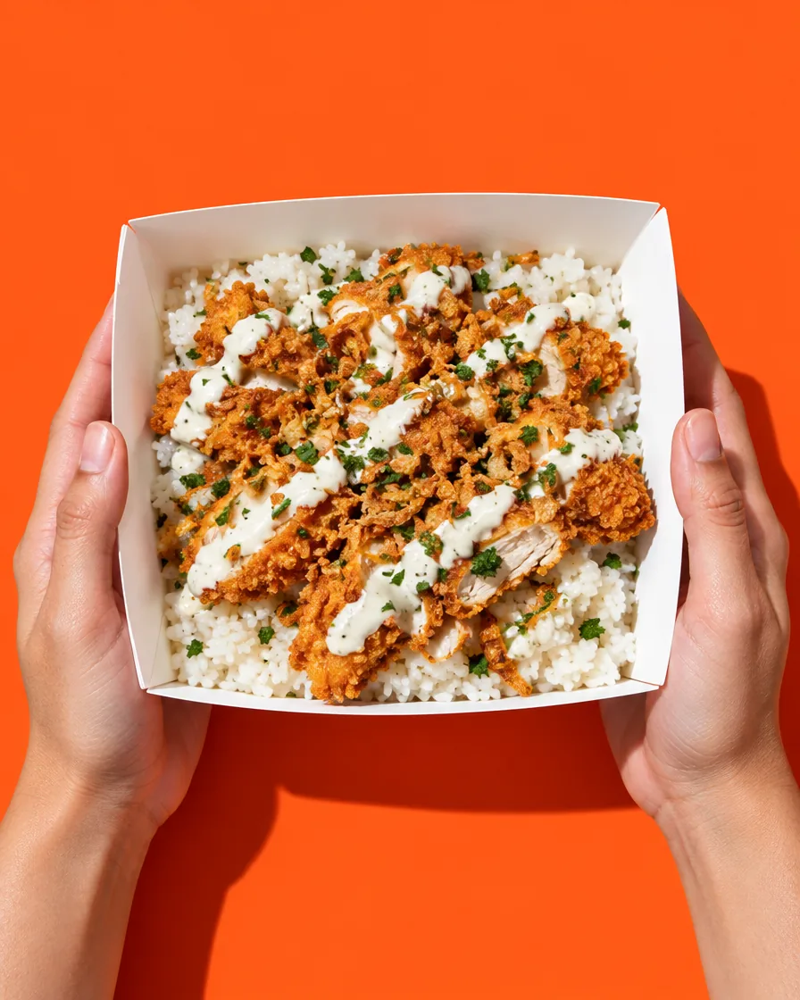
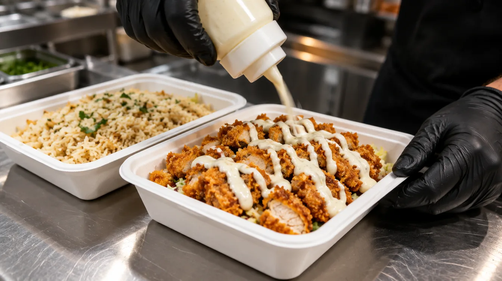
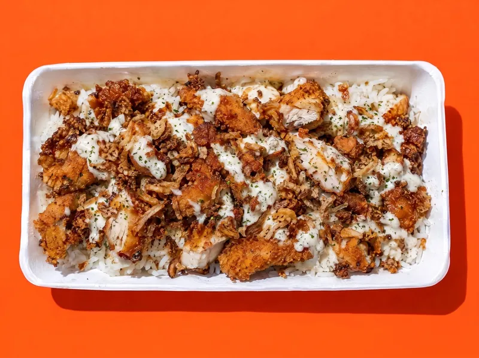
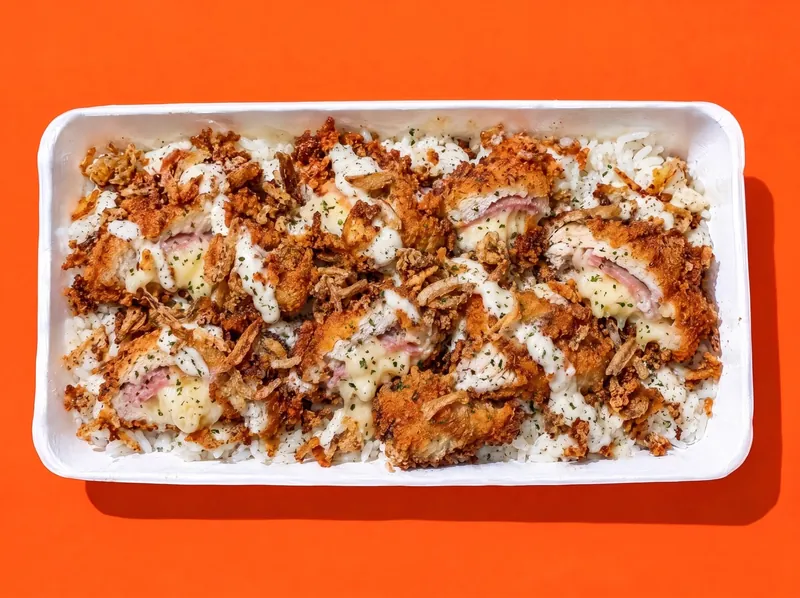
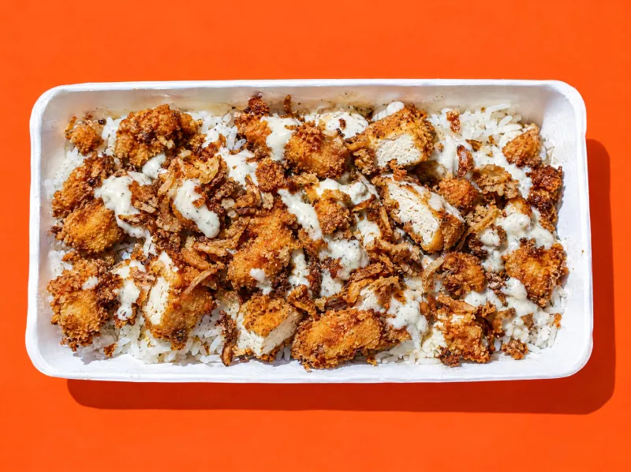
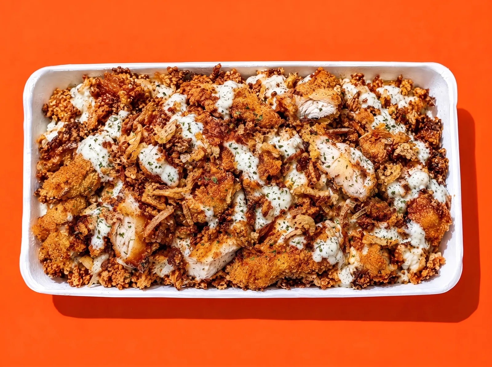
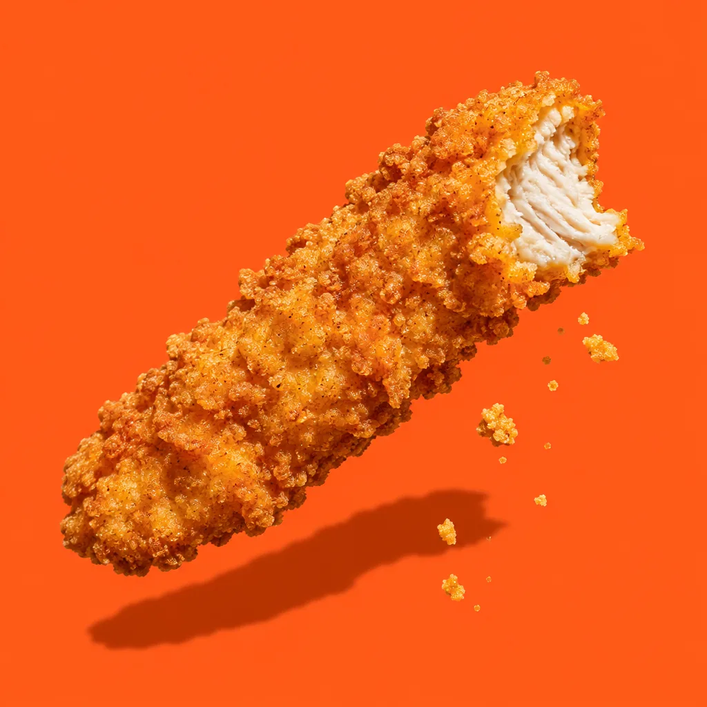
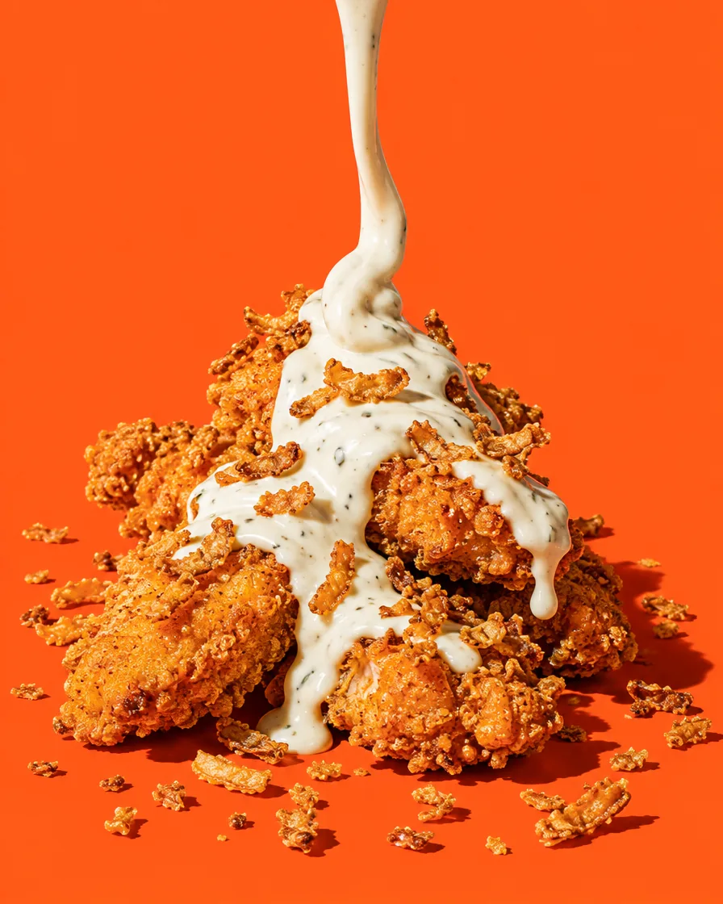
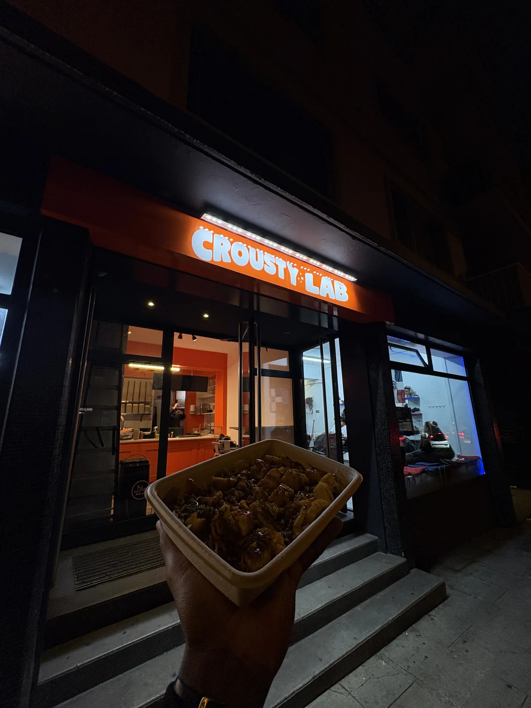

Le poulet est halal.
Tout le poulet, toute la carte, tous les jours. Le certificat est au comptoir. Et la 03 Veggie a la même panure, sa friteuse dédiée et le même prix.

12 CHF, XL 17 CHF
Un crousty se juge au premier croc. Et à la deuxième visite.
Le riz est vapeur. Le poulet est pané, croustillant, halal, et il y en a. La sauce blanche est la nôtre, froide sur le poulet chaud. Les oignons crispy finissent le travail. Quatre références, pas quarante : on ne rallonge pas la carte, on règle la recette.
Le XL double la portion de poulet dans la même boîte. La 03 Veggie a la même panure, sa friteuse dédiée et le même soin.
C'est ça, le Lab. Pas un concept. Une barquette que tu reprends demain, et le jour d'après.
Trouve quelque chose de + crousssty que ça.

Riz vapeur, poulet croustillant, sauce blanche signature, oignons crispy. Quatre façons de le faire, une seule boîte.
Tout est à12CHF Le XL à17CHF

Riz vapeur, sauce blanche signature, tenders panés, oignons crispy, persil. Le crousty tel qu'il est né.
12 CHFXL 17 CHF

Riz vapeur, sauce blanche signature, cordon bleu tranché à cœur fondant, oignons crispy, persil. Le fromage coule à la découpe.
12 CHFXL 17 CHF, deux pièces

Riz vapeur, sauce blanche végétale, tofu pané maison, oignons crispy, persil. Même panure, friteuse dédiée, même prix que les trois autres. Ce n'est pas une option, c'est une référence.
12 CHFXL 17 CHF
Riz vapeur, sauce curry maison, poulet croustillant, oignons crispy, persil. La sauce curry est faite ici : douce, pas timide.
12 CHFXL 17 CHF
La même barquette, la portion de poulet doublée. 17 CHF.
12CHF
Standard : 140 g de poulet croustillant sur le riz vapeur, la sauce blanche et les oignons crispy. 12 CHF.
XL : 280 g de poulet croustillant, la portion doublée dans la même boîte. 17 CHF.
Même boîte, même riz, même sauce. Deux fois le poulet. Pour les soirs où tu as vraiment faim.

Crac. Puis la sauce.

Né en France en 2012. Une barquette de riz vapeur recouverte de poulet pané croustillant, de sauce blanche et d'oignons crispy. Chez Crousty Lab, le poulet est halal et la sauce blanche est la nôtre. À emporter, Rue de Lyon 14, quartier des Grottes, à cinq minutes à pied de la gare Cornavin.

Une seule sauce. La nôtre.
Froide sur le poulet chaud : c'est elle qui fait le crousty. Elle est dans la 01 et la 02. La 03 la prend en version végétale, la 04 la troque contre un curry maison.
Une barquette de riz vapeur avec du poulet pané croustillant, de la sauce blanche signature et des oignons crispy. Chez Crousty Lab, tout est à 12 francs et le XL à 17 avec la portion de poulet doublée.
Une seule : la sauce blanche signature, servie froide sur le poulet chaud. La référence 03 est à la sauce blanche végétale et la 04 à la sauce curry maison.
Oui, la référence 03 : tofu pané maison, sauce blanche végétale, même panure et même prix que les autres références. 12 francs, XL à 17.
Oui, tout le poulet servi chez Crousty Lab est halal.
Rue de Lyon 14, 1201 Genève, dans le quartier des Grottes, à cinq minutes à pied de la gare Cornavin.
La même barquette avec deux fois plus de poulet. 12 francs le standard, 17 francs le XL.
Tout le poulet, toute la carte, tous les jours. Le certificat est au comptoir. Et la 03 Veggie a la même panure, sa friteuse dédiée et le même prix.

Quartier des Grottes, à 5 minutes à pied de la gare Cornavin.
| Lundi à vendredi | 11h à 14h30 18h à 22h |
|---|---|
| Samedi et dimanche | 12h à 21h |
À emporter. TWINT, carte et espèces. Poulet halal.

Trente secondes sur Google. Ça nous fait exister. On vient d'ouvrir : sois le premier.
Laisser un avis